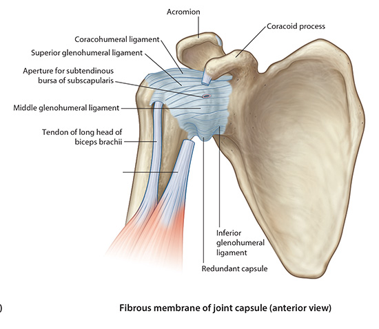
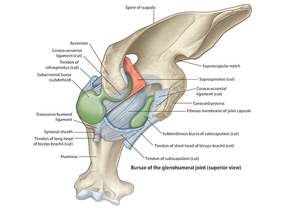

Lab2 - Module 2 - Anatomy of the Scapular Region: Page 6 of 7
|  |
| Tap on image to enlarge |
| Investigate the Glenohumeral joint. |
| Glenohumeral Joint - This is what is usually thought of as the “shoulder joint”. It consists of the head of the humerus articulating with the glenoid fossa of the scapula. It is a diarthrodial joint that has a high degree of mobility. The joint is inherently unstable because of the shape and contour of the two articulating surfaces. The humeral head is approximately twice the size of the glenoid fossa. This means there has to be a good combination of both static and dynamic stabilizers to prevent chronic dislocation of the glenohumeral joint. |
| Static stability of the glenohumeral joint is provided by a joint capsule which has redundancies that form the glenohumeral ligaments. There are three glenohumeral ligaments: |
| 1) Superior Glenohumeral - The superior glenohumeral ligament (SGL) is the smallest and least understood of the glenohumeral capsular structures, and is reported to be present in 90% to 97% of shoulder studies. It originates from the upper pole of the glenoid cavity and the base of the coracoid process, and is attached to the MGL, to the biceps tendon, and to the labrum. It inserts just superior to the lesser tuberosity in the region of the bicipital groove. There is a normal foramen or opening between the SGL and MGL, allowing communication with the subscapularis bursa. The SGL is closely related to the extraarticular coracohumeral ligament. The coracohumeral ligament originates in the lateral aspect of the coracoid and inserts on the greater tuberosity. The SGL and the coracohumeral ligament contribute to the stabilization of the glenohumeral joint and prevent posterior and inferior translation of the humeral head. When present and well-formed (developed), the SGL represents the primary capsuloligamentous restraint to inferior translation of the unloaded, abducted shoulder joint. |
| 2) Middle glenohumeral ligament. The middle glenohumeral ligament (MGL) attaches to the anterior aspect of the anatomic neck of the humerus, medial to the lesser tuberosity. It arises from the glenoid by way of the labrum and scapular neck. Of the three glenohumeral ligaments, the MGL demonstrates the greatest variation in size and thickness. It may present as thin ligamentous tissue or appear cord-like and as thick as the biceps tendon. Wall and coworkers found that it was absent in up to 27% of specimens. When present, the MGL can be identified between the subscapularis tendon (as it passes across the subscapularis) and the anterior labrum or anterior band of the IGL. The MGL demonstrates a more vertical orientation with internal rotation and a horizontal orientation (elongation) with external rotation of the shoulder. The MGL functions in the stability of the shoulder joint from 0º to 45º of abduction. Along with the subscapularis tendon and the superior part of the IGL, the MGL contributes to anterior stability at 45º of abduction. In the lower and mid-ranges of abduction, it limits external rotation. The MGL has been shown to have a secondary role in anterior stability of the shoulder in 90º of abduction when the anterior band of the IGL is cut. Inferior translation of the abducted and externally rotated shoulder is limited as a secondary restraint function of the MGL. |
| 3) Inferior glenohumeral ligament (IGL) forms the thickest part of the joint capsule and is the largest and most important of the glenohumeral ligaments. It consists of three components, the anterior band, the axillary pouch, and the posterior band. The anterior and posterior bands are attached to and contribute to the formation of the anterior and posterior glenoid labrum. In adduction, the IGL is lax . It tightens with increasing abduction, and the anterior and posterior bands move superiorly with respect to the humeral head. At 90º of abduction, the IGL is the primary restraint for anterior and posterior dislocations. The axillary pouch is located between the anterior and posterior bands and attaches to the inferior two-thirds of the entire circumference of the glenoid by means of the labrum. Like the anterior and posterior bands, it is lax in the adducted position with the arm by the patient's side. It extends inferior to the body of the glenohumeral joint as a redundancy of thickened capsular tissue. |
| Coracohumeral ligament- it is a thick band that spans from the base of the coracoid process to the capsular ligament near the greater tuberosity. It is the ligament that becomes bound down during immobilization of the shoulder and thus restricting external rotation. |
| Glenoid Labrum - The glenoid labrum is made up of fibrocartilage. The labrum is a continuous structure surrounding the glenoid rim. Despite the continuous structure there are distinct differences in the morphology when comparing the superior and inferior portions. The superior and anterior portions have loose attachments to the glenoid rim. The inferior labrum, however, has a much firmer attachment. This may be because of the attachment of the glenohumeral ligaments in this area. |
| The main function of the labrum is to deepen the glenohumeral joint to increase the stability of the joint. The labrum doubles the depth of the glenohumeral joint. It also acts as a “bumper” against humeral head translation and as a shock absorber. The superior labrum also serves as an attachment site for the long head of the biceps tendon. This tendon has about 50% attachment on the labrum and 50% attachment on the supraglenoid tubercle. There are serious clinical implications here which will discuss later, with the biceps tendon itself. |
| The vascularity of the labrum is limited to the periphery and is more prevalent in the inferior and posterior portions. The blood flow comes from branches of the suprascapular artery, circumflex scapular artery, and the posterior humeral circumflex artery. |
Bursae |
| There are several that lie within the vicinity of the shoulder joint. They are flattened fluid filled sacs that lie between tendons and bone. They help reduce the friction of a moving tendon on a bone or skin rubbing on a bony surface. |
|  |
| Tap on image to enlarge |
| Subacromial Bursa- lies between the deltoid muscle and the supraspinatus tendon and the fibrous capsule of the shoulder. It is located inferior to the acromion process and coracoacromial ligament. This is bursa is susceptible to trauma via repetitive overhead actions leading to subacromial bursitis (a form of impingement syndrome). |